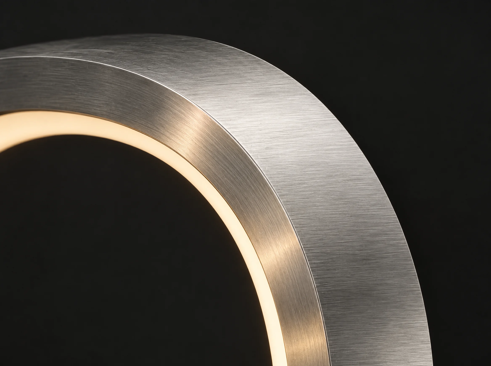

Une ligne.
Tout simplement.
Un cercle ouvert sur ce qui l’entoure.
La force d’une silhouette essentielle.
ÉTUDE DE LUMIÈRE — 001
Un cercle. Une présence.
Une autre façon de voir l’espace.
01 / UNE FORME ESSENTIELLE
Un trait d’aluminium refermé sur lui-même. La chaleur d’un halo. Un objet pensé comme une pause dans l’espace.
Un cercle ouvert sur ce qui l’entoure.
La force d’une silhouette essentielle.
Une lumière douce rencontre le métal.
Les contours prennent vie.
La matière s’efface dans la pénombre.
Il reste une présence.

MATIÈRE / ÉCHELLE SENSIBLE02 / À FLEUR DE MATIÈRE
Le métal capte. La lumière révèle.
Le contraste fait le reste.
Une surface brossée qui accroche les reflets. Chaque changement de lumière raconte une autre texture.
Un ruban lumineux suit la courbe intérieure et dessine une chaleur enveloppante.
Le centre reste libre. L’objet encadre l’espace autant qu’il l’occupe.
03 / CHANGER DE POINT DE VUE
Une même forme.
Trois façons de la regarder.
04 / UNE QUESTION D’AMBIANCE
Parfois, il suffit d’un peu moins.
Faites varier l’intensité.